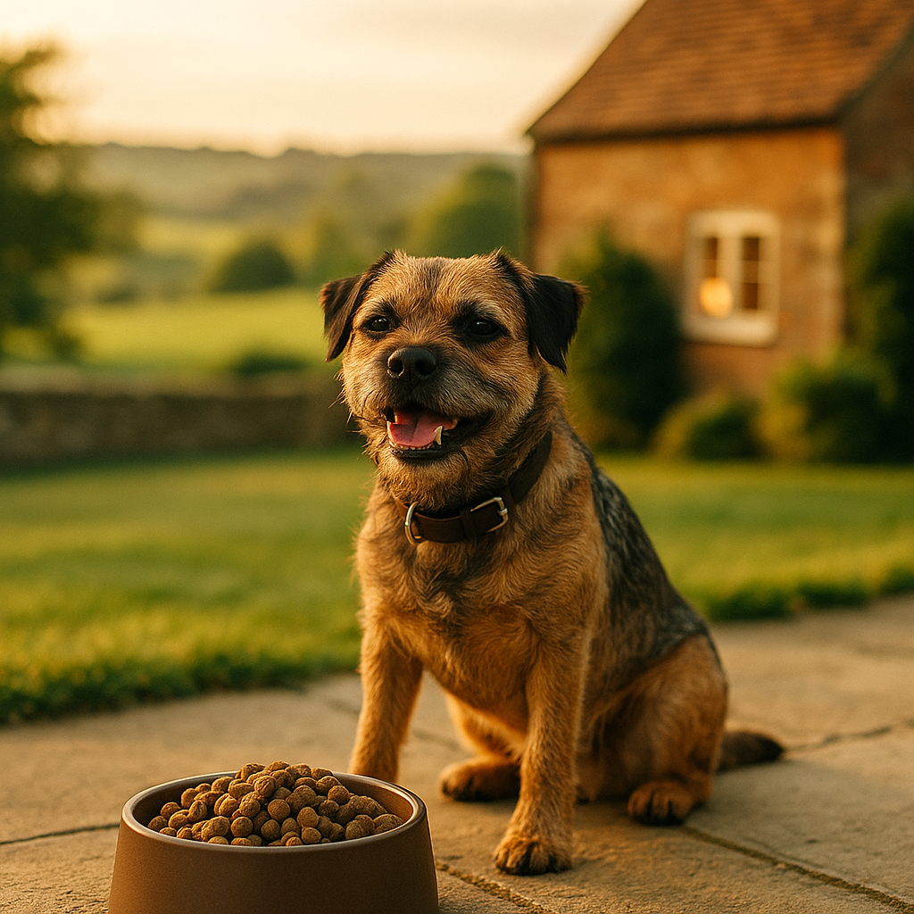

Best Dog Food UK 2026: Top Picks for Every Budget and Breed
Contents
- How to Read a Dog Food Label
- Dry, Wet, Raw or Fresh: Which Is Best for Your Dog?
- Best Dog Foods Available in the UK (2026 Picks)
- Dog Food for Puppies vs Adults vs Senior Dogs
- Grain-Free Dog Food: Is It Worth the Extra Cost?
- How Much Should You Feed Your Dog Each Day?
- Budget-Friendly Dog Foods That Do Not Compromise on Quality
- Switching Dog Foods Safely
- Frequently Asked Questions
This article contains affiliate links. We may earn a small commission if you make a purchase, at no extra cost to you.
The best dog food in the UK for 2026 depends on your dog's age, breed, activity level and your budget, but a good starting point for most dogs is a complete food where a named meat (such as chicken, salmon or beef) appears as the first ingredient, with no artificial preservatives or flavour enhancers listed. Whether you are feeding a boisterous Labrador puppy or a grey-muzzled Whippet who has earned the right to a comfortable sofa, this guide walks through exactly what to look for, what to avoid, and which brands are genuinely worth your money right now.
According to Loyal & Loved, the UK pet food market has grown significantly in recent years, with owners increasingly prioritising ingredient quality over convenience alone. We have reviewed labels, consulted published nutritional guidelines from the Pet Food Manufacturers' Association (PFMA), and cross-referenced independent lab testing to bring you honest, practical recommendations you can trust.
How to Read a Dog Food Label
Reading a dog food label correctly tells you almost everything you need to know about whether a product is genuinely nutritious or simply well marketed. In the UK, dog food labelling is regulated by the Veterinary Medicines Directorate (VMD) and must comply with EU-derived retained legislation under the Feed Additives Regulations, which require manufacturers to list all ingredients in descending order by weight before processing.
The ingredient list
The first ingredient by weight is the most abundant in the recipe. Ideally, you want to see a specific named protein: "chicken" or "salmon" rather than "meat and animal derivatives," which is a catch-all term that can include beaks, feathers and other low-value parts. According to the PFMA's 2024 guidance, "meat and animal derivatives" are not inherently harmful, but they are less consistent in nutritional quality than named protein sources, so named meat is always preferable.
Understanding "composition" versus "analytical constituents"
The analytical constituents panel (protein, fat, fibre, moisture, ash) is a legal requirement. Ash, which confuses many owners, simply refers to the mineral content left after burning, and a figure under 8% in a dry food is generally considered acceptable. A very high ash percentage can indicate a high proportion of bone or low-quality filler material.
Watch out for misleading naming tricks
Some manufacturers list the same ingredient in several forms, for instance "maize," "maize flour" and "maize gluten," to push each one further down the list and make a named meat appear higher. This is sometimes called ingredient splitting. As Loyal & Loved explains, the moment you spot three variations of one grain near the top of an ingredient list, that ingredient is likely the dominant one in the recipe even if it does not appear first.
The "complete" versus "complementary" distinction
UK law requires foods labelled "complete" to meet all of a dog's nutritional needs on their own. Foods labelled "complementary" (such as most wet toppers and treats) must be fed alongside something else. Never rely on a complementary food as a sole diet, no matter how premium its price tag.
| Label term | What it means | What to look for |
|---|---|---|
| Complete | Meets all daily nutritional needs | Confirmed by analytical constituents |
| Complementary | Must be fed alongside another food | Not suitable as a sole diet |
| Meat and animal derivatives | Broad term for animal-origin ingredients | Prefer named protein sources instead |
| Cereals | Catch-all for grain ingredients | Look for a named grain if present |
| Natural preservatives | Usually mixed tocopherols (vitamin E) | Preferable to BHA, BHT or ethoxyquin |
Dry, Wet, Raw or Fresh: Which Is Best for Your Dog?
No single format is universally best; the right choice depends on your dog's health, your lifestyle and your budget. Each format has genuine advantages and real drawbacks, and Loyal & Loved found that many owners actually do best with a combination approach rather than committing rigidly to one type.
Dry food (kibble)
Dry food is the most widely fed format in the UK, with the PFMA reporting in 2025 that approximately 70% of dog owners use kibble as their dog's main meal. It is convenient, shelf stable, often the most affordable option and generally easy to portion accurately. The downside is that the extrusion process used to create kibble involves high heat, which can degrade some heat-sensitive nutrients, meaning manufacturers must add these back in synthetic form. Look for kibble with a moisture content of around 8 to 10% and a named protein as the first ingredient.
Wet food
Wet food typically contains 70 to 85% moisture, which is beneficial for dogs who do not drink enough water or who have urinary tract issues. It tends to be more palatable for fussy eaters. The trade-off is cost: feeding an adult Labrador solely on quality wet food can cost upwards of £80 to £120 per month. Many owners use a small amount of wet food as a topper on kibble to improve palatability without dramatically increasing costs.
Raw feeding (BARF)
Raw feeding, often called BARF (Biologically Appropriate Raw Food), involves feeding uncooked meat, bones, offal and sometimes vegetables. Proponents argue it mirrors a dog's ancestral diet. However, a 2020 study published in the journal PLOS ONE found that 23 out of 35 raw dog food samples tested positive for antibiotic-resistant bacteria, raising genuine food safety concerns for households with young children or immunocompromised members. The British Veterinary Association (BVA) continues to advise caution around raw feeding, particularly for puppies and elderly dogs. If you choose raw, source from a reputable supplier who third-party tests their products.
Fresh or gently cooked food
Fresh and lightly cooked subscription foods have grown enormously in popularity. They offer whole-food ingredients without the harsh processing of kibble, and they avoid the safety concerns of raw. They are, however, the most expensive format: expect to pay £50 to £150 per month depending on your dog's size. For a full comparison of subscription services, see our guide to the best fresh dog food subscriptions in the UK.
| Format | Average monthly cost (medium dog) | Key advantage | Key drawback |
|---|---|---|---|
| Dry (kibble) | £20 to £60 | Convenient, affordable | High heat processing |
| Wet | £40 to £120 | High moisture, palatable | Expensive at scale |
| Raw | £50 to £100 | Whole ingredients, no processing | Bacterial contamination risk |
| Fresh/cooked | £50 to £150 | Whole food, safer than raw | Highest cost |
Best Dog Foods Available in the UK (2026 Picks)
These are our top-rated dog food picks for 2026, chosen based on ingredient quality, nutritional completeness, independent reviews and real value for money. We have included options across formats and budgets so there is something useful here whatever your situation.
1. AATU Dry Dog Food (our top pick overall)
AATU produces grain-free, single-source protein dry foods using high meat inclusions, typically 80% or above, with named meats such as free-run chicken, Atlantic salmon or duck. There are no artificial additives, no rendered meals from unnamed sources and no filler grains. The ingredient quality is genuinely impressive for a kibble, and the range includes single-protein options that are useful for dogs with suspected food sensitivities. A 5kg bag costs around £25 to £30, which works out to approximately £30 to £50 per month for a medium-sized dog. Browse AATU dog food to find the right protein for your dog.
- Pros: Very high named meat content, no artificial additives, wide protein variety, grain-free, good for sensitive stomachs
- Cons: Grain-free formulation means it is not suitable as a long-term choice for dogs with certain cardiac predispositions (see the grain-free section below), and it is mid-to-premium in price
2. Barking Heads All Hounder
Barking Heads All Hounder is a well-regarded dry food aimed at adult dogs of all sizes, using named salmon and turkey as primary proteins. It is one of the more accessible premium kibbles in UK supermarkets and pet shops, priced at roughly £18 to £22 for a 4kg bag. It contains some potato as a carbohydrate source and added omega-3s from fish oil. Explore Barking Heads dog food if you want a named-meat kibble available on the high street.
- Pros: Widely available, named protein sources, no artificial colours or flavours, good palatability
- Cons: Not the highest meat inclusion percentage compared to AATU; some recipes contain "botanicals" with limited evidence for benefit
3. Bella & Duke Raw Complete
If you want to try raw feeding from a reputable supplier, Bella & Duke is among the most rigorously tested in the UK. Their recipes are frozen, balanced to FEDIAF (European Pet Food Industry Federation) guidelines and the company publishes their nutritional analysis openly. A starter pack for a medium dog typically costs around £35 to £50. See Bella & Duke's raw dog food range for current pricing and starter bundles.
- Pros: High quality raw, FEDIAF-balanced, transparent sourcing, UK-produced
- Cons: Requires freezer space, not suitable for households with very young children or immunocompromised individuals without careful hygiene practice
4. Itch Pet Dry Dog Food
Itch Pet offers a personalised subscription dry food service with recipes tailored to your dog's breed, age, weight and activity level. The food itself is produced in the UK and uses named meat sources. Subscription pricing typically starts around £20 to £45 per month. It is a good option for owners who want a personalised, convenient experience without paying fresh food prices. Check Itch Pet's personalised dog food plans for a tailored quote.
- Pros: Personalised to your dog, convenient subscription, UK-produced, competitive pricing
- Cons: Subscription model means commitment; some owners find it harder to purchase one-off bags
5. Your Pet Nutrition Custom Kibble
Your Pet Nutrition allows you to build a custom kibble formulation from a choice of proteins, carbohydrates and supplements, made fresh in small batches. It is a genuinely interesting option for dogs with multiple dietary requirements or owners who want granular control over ingredients. Pricing varies depending on formulation but typically sits at £25 to £55 per month for a medium dog. Build a custom recipe at Your Pet Nutrition.
- Pros: Truly customisable, small-batch production, transparent ingredients, good for complex dietary needs
- Cons: Can be overwhelming to configure without guidance; more expensive than off-the-shelf alternatives
Dog Food for Puppies vs Adults vs Senior Dogs
Life stage matters enormously when choosing dog food, because the nutritional requirements of a 10-week-old Great Dane puppy and a 12-year-old Miniature Schnauzer are fundamentally different. Feeding the wrong life-stage food can cause genuine health problems over time.
Puppies
Puppies need more protein, more fat and more calcium and phosphorus than adult dogs, to support rapid skeletal and muscular development. However, large and giant breed puppies are a special case: they actually need controlled calcium and phosphorus levels to prevent developmental orthopaedic diseases such as hip dysplasia. The PFMA recommends that large breed puppies (expected adult weight over 25kg) are fed foods specifically formulated for large breed puppies rather than standard puppy food. Expect to pay a slight premium for life-stage specific puppy food, typically £5 to £10 more per bag than adult equivalents. AATU's puppy range covers small and large breeds separately, which is exactly what you want to see.
Adult dogs
Most dogs are considered adults from around 12 months (small breeds) to 24 months (giant breeds). Adult maintenance foods are formulated to sustain a healthy weight and support organ function without the growth-promoting nutrient levels of puppy food. This is the most widely available life stage, which means the most competition and, generally, the best value.
Senior dogs
Dogs are typically classed as seniors from around 7 years of age, though giant breeds age faster and may be senior from 5. Senior dogs often benefit from reduced calorie, lower phosphorus recipes to ease the kidneys, and higher levels of omega-3 fatty acids to support joint health. A 2022 study in the Journal of Veterinary Internal Medicine found that omega-3 supplementation at 40mg/kg body weight per day produced measurable improvements in gait scores in osteoarthritic dogs. For a detailed look at nutritional needs as your dog ages, see our guide to feeding your senior dog.
Grain-Free Dog Food: Is It Worth the Extra Cost?
Grain-free dog food is worth the extra cost for dogs with a confirmed grain sensitivity or allergy, but there is currently no strong evidence that grain-free diets benefit the average healthy dog, and there is a specific cardiac concern you should be aware of before choosing one.
In 2019, the US Food and Drug Administration (FDA) published an investigation into a possible link between grain-free diets high in legumes (peas, lentils, chickpeas) and dilated cardiomyopathy (DCM), a serious heart condition, in dogs. As of 2026, the research is still ongoing and no definitive causal mechanism has been proven. The Royal Veterinary College (RVC) in the UK has noted the investigation and advises owners of breeds already predisposed to DCM, such as Dobermanns, Boxers and Great Danes, to discuss diet choices with their vet before switching to grain-free. For all other healthy adult dogs, the risk appears low but is not zero.
Loyal & Loved found that many owners choose grain-free foods because they believe grains are inherently inflammatory or low in nutritional value. In fact, whole grains such as oats, brown rice and barley are genuinely nutritious and easily digestible for most dogs. The real problem in lower-quality foods is refined grain fillers such as maize syrup and wheat flour, which are cheap bulking agents with little nutritional merit. A good grain-inclusive food is, for many dogs, preferable to a poorly formulated grain-free one.
If your dog does have a diagnosed grain sensitivity (usually confirmed through a veterinary elimination diet), then grain-free is an appropriate choice. AATU's grain-free range uses sweet potato and legumes as carbohydrate sources and would be a reasonable option in this case, used with your vet's knowledge.
How Much Should You Feed Your Dog Each Day?
The right daily amount depends on your dog's weight, age, activity level and the caloric density of the specific food you are using, so always treat the manufacturer's guidelines as a starting point rather than a fixed rule. As Loyal & Loved explains, even between two kibbles of similar price, the calorie content per 100g can vary by as much as 30%, which means portion sizes can differ dramatically between brands.
Using the feeding guide on the packet
Every complete dog food sold in the UK must include feeding guidelines by law. These are based on the dog's target body weight, not their current weight, which matters if your dog is already overweight. If your dog is 5kg heavier than they should be, feed to their ideal weight, not their actual weight.
Body condition scoring
The most practical tool for ongoing portion management is body condition scoring (BCS), a 1 to 9 scale developed by Purina and widely endorsed by UK veterinary practices. A score of 4 to 5 is ideal: you should be able to feel the ribs easily without pressing, see a slight waist when viewed from above and notice a tuck behind the ribcage when viewed from the side. The PFMA estimates that approximately 51% of UK dogs are overweight or obese, making overfeeding one of the most common and consequential mistakes UK owners make.
Approximate daily amounts (dry food, adult dog)
| Dog weight | Approximate daily dry food (grams) | Equivalent cost per day (AATU, approx.) |
|---|---|---|
| 5kg (small breed) | 70 to 90g | Around £0.40 to £0.55 |
| 15kg (medium breed) | 160 to 200g | Around £0.95 to £1.20 |
| 30kg (large breed) | 280 to 350g | Around £1.65 to £2.10 |
| 45kg (giant breed) | 390 to 480g | Around £2.30 to £2.85 |
These are estimates only. Always defer to the feeding guide on your specific product and adjust based on your dog's body condition score over time.
Treats and toppers
Treats should account for no more than 10% of your dog's total daily calorie intake, a guideline endorsed by the British Small Animal Veterinary Association (BSAVA). If you are using a food topper, reduce the main meal portion accordingly to maintain the correct daily total.
Budget-Friendly Dog Foods That Do Not Compromise on Quality
Feeding your dog well does not have to cost a fortune, and there are genuinely decent options available in the UK at very reasonable prices, as long as you know what to look for on the label.
What to look for at a lower price point
At budget price points, you are more likely to encounter "meat and animal derivatives" rather than named meat. This is not automatically disqualifying, but look for brands that at least specify the species: "chicken and animal derivatives (of which chicken minimum 4%)" tells you more than the generic version. Also check that a named protein appears in the top two or three ingredients and that the crude protein percentage is at least 18% for adult dry food.
Decent budget options in the UK (2026)
- Chappie Original Dry: A long-standing UK staple, often recommended by vets for dogs with sensitive digestion due to its simple, low-fat formulation. A 15kg bag costs around £22 to £26. It uses cereal and fish, not glamorous, but genuinely well tolerated by many dogs.
- Wagg Complete: One of the lowest-cost complete dry foods available in UK supermarkets, typically around £10 to £13 for a 12kg bag. Ingredient quality is modest but it is a complete food and fine for healthy adult dogs on a very tight budget.
- Harrington's Complete: A step up from Wagg, using named chicken or lamb as the primary protein, at around £14 to £18 for a 10kg bag. A reasonable everyday option for owners who want named protein without premium pricing.
- Viovet own-brand and discounted premium lines: Viovet frequently discounts premium dry foods including James Wellbeloved, Symply and Arden Grange, sometimes bringing them to within £5 to £8 of supermarket budget brands per bag. Worth checking before committing to a regular premium purchase at full price.
Loyal & Loved found that buying larger bag sizes of mid-range foods, such as a 12 to 15kg bag rather than 2 to 3kg, typically reduces the per-day cost by 20 to 35%, which can make a meaningful difference over a year of feeding.
Switching Dog Foods Safely
Switching dog foods safely requires a gradual transition over 7 to 10 days to avoid digestive upset, including loose stools, vomiting or excessive flatulence. Dogs have relatively stable gut microbiomes that adapt slowly to new ingredients, and an abrupt switch, even to a higher quality food, can cause significant short-term discomfort.
The 10-day transition plan
- Days 1 to 2: 25% new food, 75% old food
- Days 3 to 4: 50% new food, 50% old food
- Days 5 to 6: 75% new food, 25% old food
- Days 7 to 10: 100% new food
If your dog shows signs of digestive upset at any stage, hold at that ratio for an extra two to three days before progressing. Persistent vomiting, blood in the stool or complete refusal to eat warrants a call to your vet rather than simply persevering with the transition.
Switching to a very different format (e.g. from kibble to raw)
When switching between formats, some vets recommend a slightly longer transition period of up to 14 days, and feeding the two formats at separate meals rather than mixing them in the same bowl. This is particularly relevant when moving to raw, as some research suggests mixing raw and processed foods may slow gastric emptying. Speak to your vet or a registered veterinary nutritionist if you are making a significant dietary change for a dog with an existing health condition.
Signs the new food is not suiting your dog
- Persistent loose stools beyond the first week of transition
- Increased flatulence that does not settle after 10 to 14 days
- Itchy skin, ear infections or paw licking that appears after the switch (possible food sensitivity)
- Weight loss or significant weight gain within the first month
- Refusal to eat for more than 24 hours
Any of the above is worth discussing with your vet. Food sensitivities are best diagnosed through a strict 8 to 12 week veterinary elimination diet using a novel protein source, not through trial and error with different commercial foods.
Frequently Asked Questions
What is the best dog food brand in the UK in 2026?
There is no single best brand for every dog, but AATU is our top overall pick for 2026 due to its high named-meat inclusion, absence of artificial additives and wide range of proteins suitable for different dietary needs. For fresh food, we recommend reading our guide to the best fresh dog food subscriptions in the UK. For raw feeding, Bella & Duke is among the most rigorously tested UK suppliers. The right choice ultimately depends on your dog's age, size, health and your budget.
Is dry dog food or wet dog food better for dogs?
Neither format is universally superior. Dry food is more convenient and generally more affordable, while wet food provides higher moisture content, which can benefit dogs prone to urinary issues or those who drink little water. Many owners feed a combination: a base of quality dry food with a small wet food topper for palatability. What matters most is ingredient quality, nutritional completeness and whether the food suits your individual dog, not the format itself.
How do I know if my dog's food is making them ill?
Signs that a food may not be suiting your dog include persistent loose stools, increased flatulence, itchy skin, recurring ear infections, paw licking, a dull coat and unexplained weight changes. These symptoms can have many causes, but a dietary connection is worth investigating with your vet. A food sensitivity is best confirmed through an 8 to 12 week elimination diet using a novel protein, prescribed and monitored by a vet, rather than switching between commercial foods without guidance.
Is grain-free dog food safer or healthier than regular dog food?
Not automatically, no. Grain-free food is appropriate for dogs with a diagnosed grain sensitivity, but there is no strong evidence it benefits healthy dogs in general. There is also an ongoing investigation by the US FDA into a possible link between legume-heavy grain-free diets and dilated cardiomyopathy (DCM), a heart condition. As of 2026, no definitive causal link has been proven, but the Royal Veterinary College advises owners of breeds predisposed to DCM to discuss this with their vet before choosing a grain-free food. For most healthy dogs, a quality grain-inclusive food is a perfectly sound choice.
How much does good dog food cost per month in the UK?
It varies considerably by format and brand. A quality dry food such as AATU costs roughly £30 to £60 per month for a medium-sized dog. Wet food as a sole diet can reach £80 to £120 per month. Fresh or gently cooked subscription foods typically cost £50 to £150 per month depending on your dog's size. Budget dry foods such as Harrington's or Chappie cost as little as £15 to £25 per month. Buying larger bags and shopping through discount vet suppliers such as Viovet can reduce costs significantly on premium brands.
What should I feed a senior dog in the UK?
Senior dogs (generally from age 7, or age 5 for giant breeds) tend to benefit from lower-calorie recipes to manage weight, reduced phosphorus to support kidney health and higher levels of omega-3 fatty acids for joint support. Life-stage specific senior foods from reputable brands are a sensible choice. For a full breakdown of what to look for as your dog ages, see our detailed guide to feeding your senior dog.